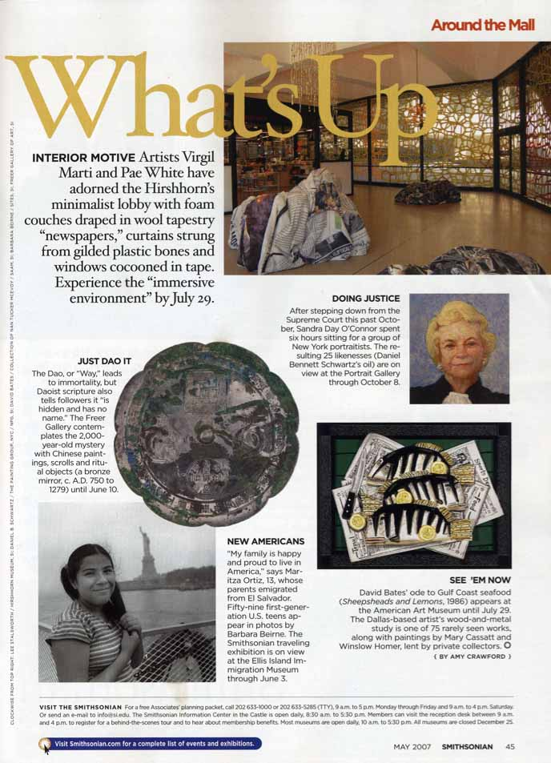
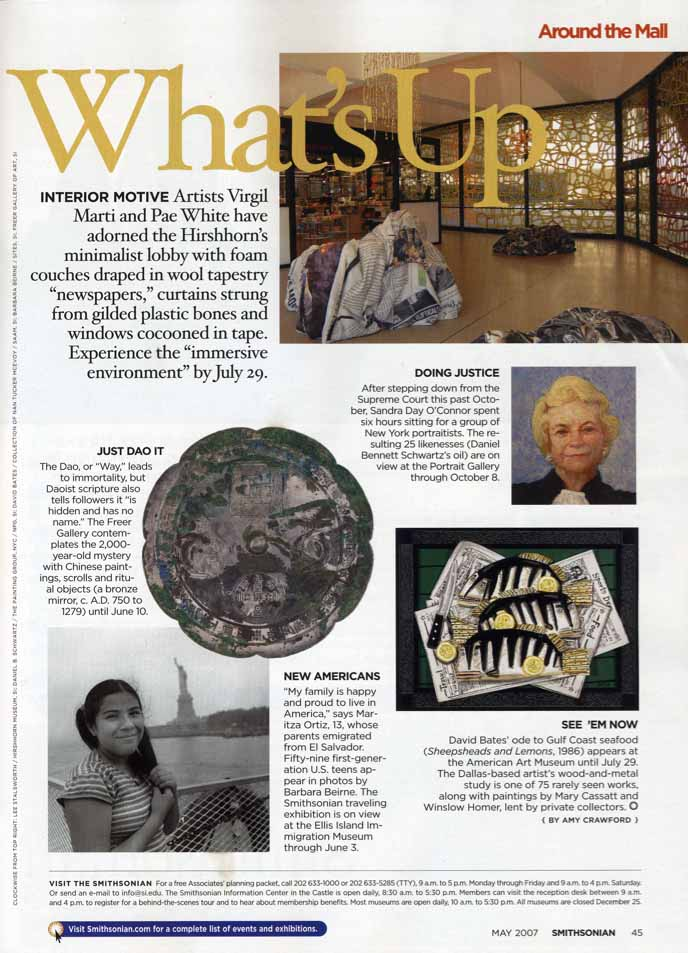
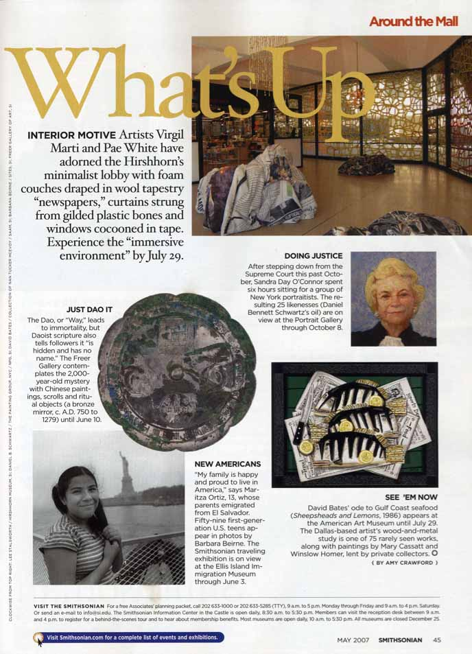
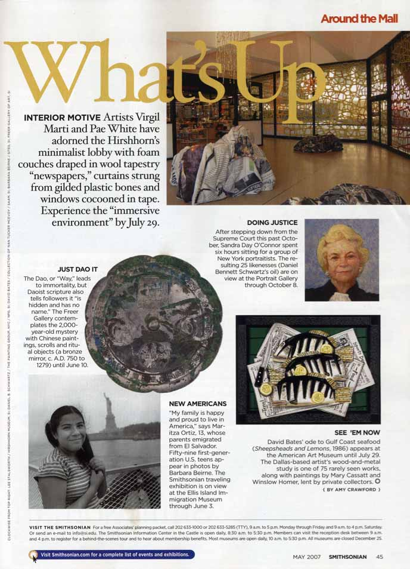
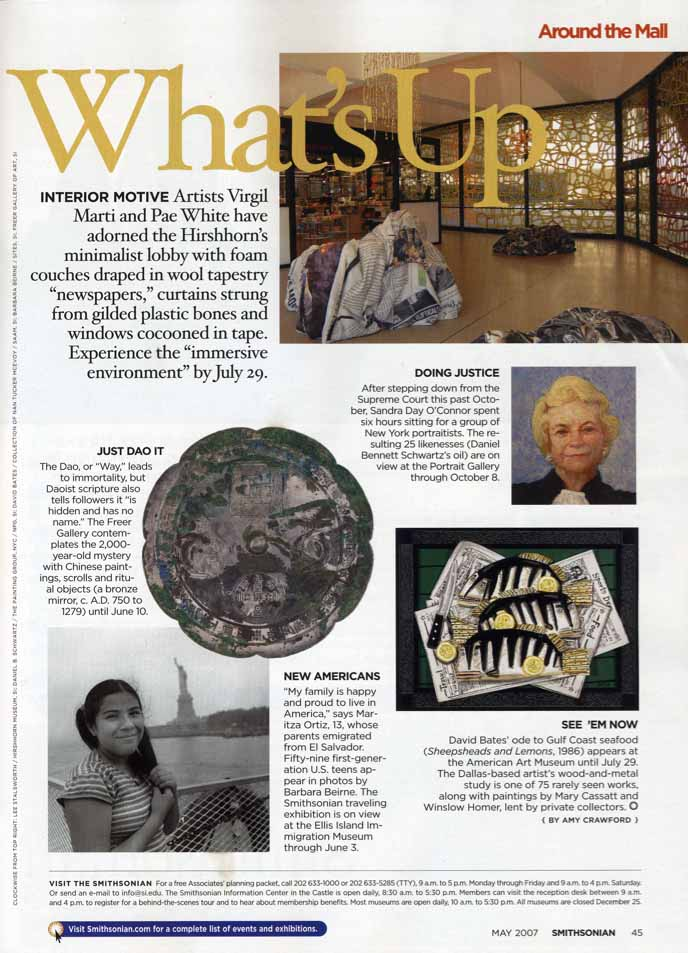

Barbara Beirne
menu
Projects
Becoming American
Women of Appalachia
The Troubles - Belfast
Children of the World
Praise The Lord
Dismal Harmony
Exhibitions
Press
Bio
Contact
Press:
Smithsonian Magazine
Around the Mall

 


